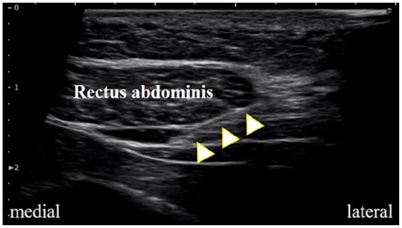
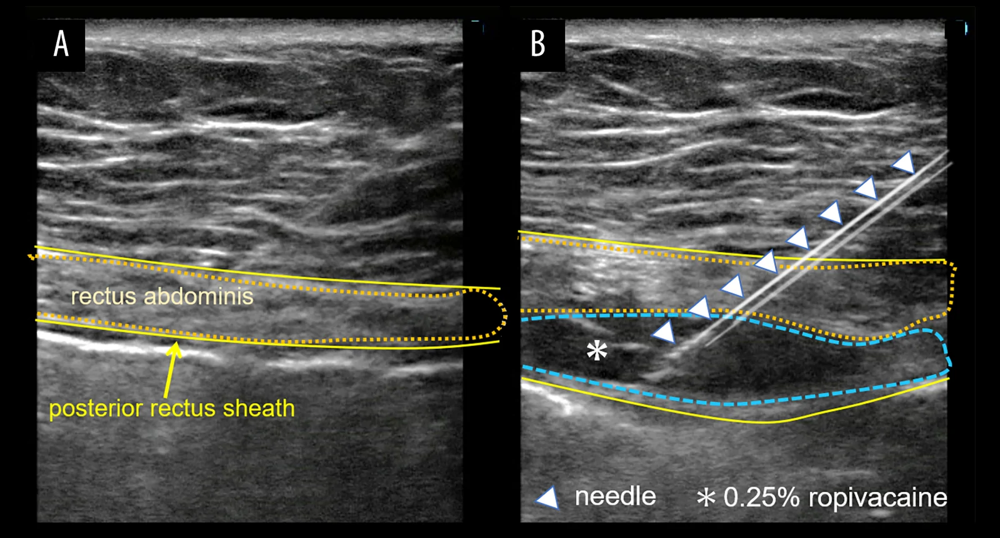

1967 — Hội chứng đau nhánh trước thần kinh liên sườn (ACNES): đau thành bụng khu trú, hình ảnh "bình thường" và vai trò của block bao cơ thẳng dưới siêu âm / Anterior cutaneous nerve entrapment syndrome
Tags: pattern:dau-thanh-bung pattern:khong-dich vung:thanh-bung anatomy:thanh-kinh-lien-suon protocol:sieu-am-dau-dong protocol:block-bao-co-thang score:Carnett incidentaloma:khong
Mức chắc chắn (certainty): tổng hợp y văn (literature synthesis) — ghép đoàn hệ 1.116 bệnh nhân xác lập bộ tiêu chuẩn lâm sàng (Ann Surg 2021, PMID 30817351; tên tác giả đọc từ authorString của PMID), nghiên cứu cắt ngang 21 bệnh nhân tại khoa cấp cứu Nhật (J Gen Fam Med 2024, PMC11565070), so sánh 37 bệnh nhân mổ lại sau thất bại (J Abdom Wall Surg 2025, PMC12765713), 16 trẻ tại cấp cứu (Pediatr Int 2025, PMC12123555), 31 trẻ tại trung tâm đau bậc 3 với phản biện về lạm dụng can thiệp (BMJ Paediatr Open 2026, PMC12878369), cùng ca minh hoạ kỹ thuật block dưới siêu âm (Am J Case Rep 2026, PMC13545972; SAGE Open Med Case Rep 2025, PMC12378487). Nhóm không có bệnh nhân của mình.
Câu hỏi thực hành: nữ 34 tuổi, 8 tháng sau mổ lấy vạt DIEP, đau nhói, khu trú một điểm ở bờ ngoài cơ thẳng bụng phải, ngang rốn; đau tăng khi ngồi dậy, ho, gồng bụng, giảm khi nằm yên; không sốt, không sụt cân, không rối loạn đại tiện. Siêu âm bụng và CT bụng–chậu (làm ở tuyến trước) bình thường. Câu hỏi: có phải "đau do dính sau mổ" — hình ảnh âm tính có loại trừ được gì, và bước tiếp theo là gì? Bài chốt bốn điểm: (1) ACNES là đau thành bụng do nhánh trước T10–T12 bị chèn ở bờ ngoài cơ thẳng — chẩn đoán hoàn toàn bằng lâm sàng: đau khu trú + Carnett dương + rối loạn cảm giác + pinch test; (2) hình ảnh bình thường là dấu hiệu đặc trưng, không phải "không có bệnh" — siêu âm/CT dùng để loại trừ thoát vị, tụ máu, khối và để dẫn đường block; (3) block bao cơ thẳng dưới siêu âm giảm đau > 50% sau 15 phút là tiêu chuẩn hỗ trợ mạnh (81% ca trong đoàn hệ 1.116) và đồng thời là điều trị bậc 1; (4) chỉ chuyển mổ khi thất bại 2 bậc nội khoa — cắt thần kinh trước đạt 60%, sau đạt 50%, mổ lại sau tái phát 85%. Nối 1871 – Phồng/yếu thành bụng sau DIEP/TRAM, 1936 – Tụ máu bao cơ thẳng bụng, 3061 – Di căn lỗ trocar.
1. Tổng quan bệnh học – cơ chế hình ảnh: vì sao "không thấy gì" mà vẫn đau
1.1 Giải phẫu – nơi thần kinh "bị kẹp"
- Nhánh trước của T10–T12 chạy trong mặt phẳng mạch–thần kinh giữa cơ chéo trong và cơ ngang bụng, rồi xuyên qua mạc sau cơ thẳng (posterior rectus sheath) ở bờ ngoài cơ thẳng (gần đường bán nguyệt), đi trong cơ thẳng và ra ngoài qua mạc trước để thành nhánh da.
- Điểm chèn (entrapment point) chính là chỗ xuyên mạc sau — nơi mạc dày, góc gập, và nơi phẫu thuật (rạch ngang, lấy vạt, đặt trocar, khâu mạc) cắt ngang hoặc khâu vướng nhánh thần kinh. Vì vậy ACNES hay xuất hiện sau mổ bụng, nhưng cũng có thể tự phát (đoàn hệ 1.116 ca: đa số khởi phát tự nhiên, đột ngột hoặc từ từ — PMID 30817351).
- Bản đồ khoanh da (dermatome) giúp định vị: T10 = quanh rốn, T11 = dưới rốn, T12 = trên xương mu/bẹn. Trong 21 ca cấp cứu, 48% đau ở T11–T12 và 5% đau hai bên (PMC11565070).
- Vì sao đau dữ dội mà không có dấu hiệu nội tạng: đây là đau thành bụng (parietal), không phải đau tạng. Đau tạng lan mơ hồ, kèm vã mồ hôi, buồn nôn, thay đổi mạch; đau thành bụng khu trú, sờ đúng điểm là đau, tăng khi căng cơ. Vì vậy Carnett dương là dấu hiệu phân biệt cốt lõi.
1.2 Vì sao hình ảnh bình thường — và tại sao đó là "dấu hiệu", không phải "âm tính"
- Kích thước tổn thương dưới ngưỡng không gian của hình ảnh: nhánh trước thần kinh liên sườn có đường kính khoảng 1 mm (sợi trục + bao myelin), không có mô đệm lớn. Siêu âm tần số cao có thể thấy thân thần kinh lớn (như dây thần kinh giữa 3–4 mm), nhưng không đủ tương phản để thấy một nhánh 1 mm nằm trong cơ thẳng dày.
- Tổn thương là "chức năng – vi mô": chèn ép gây thiếu máu cục bộ thần kinh, phù sợi trục, xơ hóa quanh thần kinh (perineural fibrosis), đôi khi neuroma nhỏ — không tạo khối, không thay đổi đậm độ, không phá xương. Vì vậy CT/MRI bình thường là kỳ vọng, không phải bằng chứng loại trừ.
- Vậy hình ảnh để làm gì: (1) loại trừ các nguyên nhân có hình ảnh (thoát vị, tụ máu bao cơ thẳng, áp-xe, khối u, lạc nội mạc, giãn cơ thẳng); (2) dẫn đường block chính xác vào mạc sau cơ thẳng; (3) phát hiện bệnh nội tạng đi kèm — điều này quan trọng vì ACNES có thể cùng tồn tại với bệnh nặng (ca ACNES ở bệnh nhân ung thư đại tràng tiến xa, PMC13545972).
- Hệ quả thực hành: câu "siêu âm và CT bình thường" không trả lời được "có ACNES hay không"; chỉ khám + block chẩn đoán trả lời được. Ngược lại, không được dừng ở ACNES khi có dấu hiệu báo động (sụt cân, thiếu máu, rối loạn đại tiện, khối sờ được, sốt).
1.3 Dịch tễ và ngưỡng định lượng (số phải nhớ)
- Tần suất: 0,11% tổng số ca đau bụng tại một khoa cấp cứu Nhật trong 4 năm (21 ca/10 năm; 5, 2, 1, 1 ca mỗi năm 2020–2023) — thấp hơn nhiều so với 2% tại một khoa cấp cứu Hà Lan chuyên về ACNES; tác giả cho rằng thiếu nhận biết làm chẩn đoán bị bỏ sót (PMC11565070).
- Chân dung điển hình: tuổi trung vị 50 (16–83), 62% nữ, 52% khởi phát cấp < 1 tuần, 33% có tiền sử mổ bụng, 24% đái tháo đường (PMC11565070); trong 1.116 ca, đa số nữ, tuổi trẻ–trung niên, BMI bình thường, đau NRS 6–8, chẩn đoán muộn sau nhiều lần đi khám (PMID 30817351).
- Bộ tiêu chuẩn lâm sàng (1.116 ca): rối loạn cảm giác 78%, pinch test dương 78%, Carnett dương 87%, giảm đau > 50% sau block bao cơ thẳng cải biên 81% (PMID 30817351). Đây là bốn trụ của chẩn đoán.
- Tiêu chuẩn block: giảm > 50% điểm đau sau 15 phút với thuốc tê (đề xuất của Siawash, chưa được thẩm định ở nghiên cứu độc lập — chính nhóm nghiên cứu nhi khoa nêu rõ điều này, PMC12878369).
- Hiệu quả điều trị theo bậc (người lớn): tiêm điểm đau/PRF ~45%; cắt thần kinh trước (anterior neurectomy) 60%; cắt thần kinh sau (posterior neurectomy) 50% — nhưng 60% nếu cắt trước đã từng hiệu quả, chỉ 40% nếu cắt trước thất bại; tái phát sau cắt sau ~20%; mổ lại (redo posterior neurectomy) đạt 95% ngắn hạn và 85% dài hạn (trung vị 40 tháng) so với 41% ở nhóm điều trị bảo tồn (p = 0,008; PGIC 70% vs 41%, p = 0,018) (PMC12765713).
- Một lần tiêm tại cấp cứu: 36% hết đau lâu dài (trung vị theo dõi 51,5 tháng), 64% tái phát trong trung vị 1 tuần — nên hẹn theo dõi ngắn là bắt buộc, không phải tùy chọn (PMC11565070).
- Trẻ em — nơi dễ lạm dụng can thiệp: 16 trẻ tại cấp cứu, tuổi trung vị 11 (9–14), 50% nữ, chẩn đoán sớm (3 ngày, 0–46), đau bên phải, nhói, tăng khi vận động, 63% có triệu chứng "giả tạng" (buồn nôn, đau kiểu viêm ruột thừa); tiêm thuốc tê ở 31% và hiệu quả ở tất cả, nhưng 60% tái phát (PMC12123555). Ở 31 trẻ chuyển đến trung tâm đau bậc 3, không ca nào đủ tiêu chuẩn chắc chắn của ACNES, < 25% được tiếp cận theo mô hình sinh–tâm–xã hội trước đó, và 64,5% (20/31) giảm/không còn đau sau điều trị theo mô hình này — tức không cần can thiệp xâm lấn (PMC12878369).
2. Mẫu hình + chẩn đoán phân biệt theo vị trí (Gamut)
- Mẫu hình cốt lõi: đau khu trú một điểm ở bờ ngoài cơ thẳng, tăng khi gồng bụng (Carnett), rối loạn cảm giác (tăng/giảm cảm giác đau khi châm hoặc véo da), không có dấu hiệu nội tạng, hình ảnh bình thường.
- Gamut theo vị trí:
- Quanh rốn (T10): ACNES · thoát vị rốn · u niệu rốn (người lớn) · di căn rốn · lạc nội mạc.
- Dưới rốn/hố chậu phải (T11): ACNES · viêm ruột thừa/viêm túi thừa · thoát vị bẹn–đùi · tụ máu bao cơ thẳng · lạc nội mạc thành bụng · u cơ thẳng.
- Dưới sườn/hạ sườn (T10–T11): ACNES · bệnh túi mật · loét dạ dày · thoát vị Spigelian · gãy sườn · đau cơ chéo.
- Trên xương mu/bẹn (T12): ACNES · thoát vị bẹn · viêm khớp mu · đau dây chằng tròn · lạc nội mạc.
- Gamut theo cơ chế (dễ bị bỏ qua):
- Thần kinh: ACNES · chèn ép rễ T10–L1 · đau thần kinh sau zoster · bệnh thần kinh đái tháo đường.
- Cơ–cân: tụ máu bao cơ thẳng · giãn cơ thẳng · rách cơ chéo · thoát vị Spigelian · bulge sau vạt (1871).
- Mô mềm: lạc nội mạc thành bụng · u mỡ/angiolipoma · u sợi (desmoid) · di căn lỗ trocar (3061).
- Nội tạng "giả thành bụng": viêm ruột thừa, viêm túi thừa, viêm túi mật, bệnh loét — Carnett có thể dương giả khi ổ viêm dính thành bụng.
3. Bảng so sánh phân biệt (ma trận đối chiếu)
| Thực thể (entity) | Hình ảnh điển hình (US/CT/MRI) | Chốt vào (rule-in) | Chốt loại (rule-out) | Gợi ý xác nhận |
|---|---|---|---|---|
| ACNES | Bình thường trên US/CT; không khối, không dịch, không lỗ khuyết; đôi khi dày nhẹ cơ thẳng hoặc thoái hoá mỡ tại chỗ tiêm cũ | Đau khu trú bờ ngoài cơ thẳng + Carnett dương + rối loạn cảm giác + pinch test dương; giảm > 50% sau block | Có lỗ khuyết/túi (thoát vị), khối, dịch, hoặc đau lan theo tạng | Block bao cơ thẳng dưới siêu âm (chẩn đoán + điều trị); đáp ứng > 50% sau 15 phút |
| Tụ máu bao cơ thẳng (RSH) | US: khối hồi âm hỗn hợp trong bao cơ; CT: ~45 HU (máu lỏng) – ~85 HU (cục), hình thoi trong bao, có thể thoát cản quang | Khối tăng đậm độ trong bao cơ + đau cấp + tiền sử kháng đông/ho | Đậm độ dịch 0–20 HU, không trong bao cơ → seroma; Carnett dương nhưng sờ thấy khối | CT bụng (đúng 95–100% vs siêu âm 75–95%); xem 1936 |
| Thoát vị Spigelian | US/CT: lỗ khuyết ở đường bán nguyệt, ngay trên/dưới đường cung, túi chứa mỡ hoặc ruột, rõ hơn khi Valsalva | Lỗ khuyết + nội dung chui ra + tăng khi gắng sức | Mạc liền, chỉ đau điểm → ACNES | CT có Valsalva; đo đường kính lỗ (mm) |
| Thoát vị bẹn/đùi/rốn | Lỗ khuyết + túi; US động và CT Valsalva | Khối sa khi ho, đẩy lên được, có lỗ | Đau khu trú không khối, không lỗ → ACNES | Khám + US động; CT khi béo/nghi nghẹt |
| Lạc nội mạc thành bụng | US: nốt đặc, hồi âm thấp, không mạch; MRI: T2 thấp–trung bình, ngấm thuốc, có thể có chấm xuất huyết | Đau theo chu kỳ kinh + nốt đặc trong cơ/mô mỡ + tiền sử mổ | Đau không chu kỳ, không nốt → ACNES | MRI vùng thành bụng; hỏi kỹ chu kỳ |
| U mỡ/angiolipoma mô mềm | US: khối hồi âm đều, có vách mảnh; CT: −50 đến −120 HU (mỡ); angiolipoma có thành phần mô mềm/ngấm thuốc | Khối đặc/sờ được + đậm độ mỡ | Chỉ đau điểm, không khối → ACNES | CT/MRI; Carnett dương giả đã gặp với angiolipoma sâu (PMC13478911) |
| U sợi (desmoid) | MRI: khối xâm lấn, T2 tăng không đồng nhất (dải tối collagen), ngấm thuốc mạnh; CT: mô mềm đồng nhất | Khối đặc xâm lấn + ngấm thuốc + tiền sử FAP/mổ | Không khối → ACNES | MRI có cản quang; sinh thiết khi cần |
| Bệnh nội tạng "giả thành bụng" | US/CT có dấu hiệu nội tạng (ruột thừa dày, túi mật căng, dịch tự do, thâm nhiễm mỡ) | Đau tạng + dấu hiệu hình ảnh + xét nghiệm viêm | Hình ảnh bình thường + Carnett dương đơn thuần → ACNES | CT bụng có cản quang khi có dấu hiệu báo động |

Siêu âm dọc: cơ thẳng bụng phía trên, mạc sau cơ thẳng là đường sáng dưới cơ; kim (mũi tên vàng) đi từ bên ngoài vào trong (lateral → medial) và dừng ngay trên mạc sau — đúng mặt phẳng thần kinh xuyên qua. Nguồn: SAGE Open Med Case Rep 2025, Fig. 2, PMC12378487, CC BY-NC 4.0 — ảnh nguyên bản.
Cùng kỹ thuật, hai thì: (A) xác định cơ thẳng và mạc sau; (B) kim vào tới mạc sau rồi bơm 0,25% ropivacaine tách lớp (hydrodissection, dấu ✳) — thuốc tê lan dọc mặt phẳng thần kinh, không tiêm vào thân cơ. Nguồn: Am J Case Rep 2026, Fig. 3, PMC13545972, CC BY-NC-ND 4.0 — ảnh nguyên bản, không crop/ghép.Bốn dấu hiệu khám quyết định
- 1. Carnett: ấn điểm đau rồi cho bệnh nhân gập đầu/nâng chân để căng cơ bụng — đau tăng = dương (đau thành bụng); đau giảm = âm (nghĩ đau tạng).
- 2. Pinch test: véo da–mỡ tại điểm đau rồi so bên đối diện — đau không tương xứng = dương (78% trong 1.116 ca).
- 3. Rối loạn cảm giác: dùng kim châm/nhẹ so hai bên — tăng hoặc giảm cảm giác tại đúng điểm đau (78%).
- 4. Block chẩn đoán: giảm > 50% sau 15 phút — vừa xác nhận, vừa là điều trị đầu tay (81%).
4. Protocol chụp + phân bậc điều trị
- Siêu âm (bắt buộc, bước 1): đầu dò linear 12–18 MHz (béo: 9–12 MHz), bệnh nhân nằm ngửa, gối gấp nhẹ; quét dọc và ngang toàn thành bụng trước, so hai bên; chụp lại khi gồng bụng/Carnett và khi Valsalva để tìm lỗ thoát vị ẩn. Ghi: vị trí điểm đau đánh dấu trên da, độ dày cơ thẳng, mạc liền/khuyết, khối/dịch, khoảng cách từ da tới mạc sau (để chọn kim).
- CT bụng–chậu có cản quang: khi siêu âm không kết luận, béo, nghi thoát vị/khối, hoặc có dấu hiệu báo động; thêm thì Valsalva nếu nghi thoát vị thành bụng (1871).
- MRI: khi nghi lạc nội mạc, desmoid, u thần kinh, hoặc đau rễ (MRI cột sống thắt lưng).
- Block bao cơ thẳng dưới siêu âm (kỹ thuật): vô khuẩn; kim 22–25 G, in-plane, từ bờ ngoài vào trong, dừng ngay trên mạc sau cơ thẳng; hút thử (không máu/không khí) rồi bơm thuốc tê (bài gốc dùng 0,25% ropivacaine) để hydrodissection; có thể lặp 2–3 mức nếu đau lan. Đánh giá lại sau 15 phút bằng NRS: > 50% = dương.
- Steroid không thêm lợi ích: thử nghiệm ngẫu nhiên cho thấy thêm glucocorticoid vào thuốc tê không cải thiện kết quả — nên không dùng steroid thường quy (được trích trong PMC11565070).
- Phân bậc điều trị (người lớn):
flowchart TD
A[Dau thanh bung khu tru + Carnett duong] --> B[Sieu am + CT neu can: loai tru thoat vi, mau, khoi]
B --> C[Block bao co thang duoi sieu am]
C --> D{Giam > 50% sau 15 phut?}
D -->|Khong| E[Xem lai: dau tang, dau re, benh noi tang, yeu to tam ly]
D -->|Co| F[ACNES: vat ly tri lieu + giam dau]
F --> G{Tai phat sau 4-6 tuan?}
G -->|Khong| H[Theo doi]
G -->|Co| I[Lap block / PRF: ~45% thanh cong]
I --> J{That bai?}
J -->|Co| K[Cat thanh kinh truoc: 60%]
K --> L{That bai?}
L -->|Co| M[Cat thanh kinh sau: 50% - 60% neu truoc hieu qua]
M --> N{Tai phat ~20%?}
N -->|Co| O[Redo posterior neurectomy: 85% vs 41% bao ton]
- Ngưỡng chuyển mổ: thất bại block lặp lại + PRF, đau ảnh hưởng chức năng kéo dài; không mổ khi chưa thử ít nhất 2 bậc nội khoa. Ở trẻ, ưu tiên mô hình sinh–tâm–xã hội trước (64,5% cải thiện, PMC12878369).
5. Biến thể bình thường và cạm bẫy
- "Hình ảnh bình thường" không loại trừ bệnh nặng: ACNES đã được báo cáo cùng tồn tại với ung thư đại tràng tiến xa; các block lặp lại chỉ giảm đau tạm thời (PMC13545972). Luôn hỏi sụt cân, thiếu máu, rối loạn đại tiện, khối sờ được, sốt — có một dấu là phải chụp nội tạng, không được quy hết cho ACNES.
- Carnett dương giả: tổn thương sâu trong thành bụng (angiolipoma, khối cơ) vẫn gây đau tăng khi căng cơ — Carnett chỉ nói "đau thuộc thành bụng", không nói "thần kinh" (PMC13478911).
- Tiêm sai mặt phẳng: tiêm vào thân cơ thẳng thay vì trên mạc sau → thuốc không tới thần kinh → block âm giả và kết luận sai "không phải ACNES". Đây là lý do phải hydrodissection dưới siêu âm, không tiêm mù theo mốc giải phẫu.
- Bỏ sót tụ máu bao cơ thẳng: bệnh nhân đang kháng đông, đau cấp, sờ thấy khối — siêu âm/CT phải loại trừ trước khi tiêm (nguy cơ chọc vào ổ máu).
- Trẻ em: chẩn đoán "quá tay": trong 31 trẻ tại trung tâm đau, không ca nào đủ tiêu chuẩn chắc chắn, và 64,5% cải thiện bằng tiếp cận sinh–tâm–xã hội — nên không vội cắt thần kinh ở trẻ (PMC12878369).
- Đau tái phát sau mổ cắt thần kinh không có nghĩa "mổ hỏng": ~20% tái phát sau cắt sau; mổ lại đạt 85% nhưng chỉ ở trung tâm chuyên khoa — cần chọn đúng bệnh nhân (PMC12765713).
- Đừng quên nguyên nhân cơ học đi kèm: ACNES có thể phối hợp với thoát vị nhỏ/bulge sau vạt — block giảm đau nhưng không sửa được lỗ khuyết.
6. Tự lượng giá — Blind Quiz
Ca 1 — Đau điểm bờ ngoài cơ thẳng, hình ảnh bình thường
- Gợi ý lâm sàng: nữ 34 tuổi, 8 tháng sau lấy vạt DIEP, đau nhói một điểm ngang rốn bên phải, tăng khi ngồi dậy; siêu âm/CT bình thường.
- Câu hỏi: Kim đang ở mặt phẳng nào? Vì sao tiêm vào đây? Đánh giá kết quả thế nào?
Bấm để hiện đáp án (findings + chẩn đoán)
- Dấu hiệu: kim đi in-plane từ bờ ngoài vào trong, dừng ngay trên mạc sau cơ thẳng (đường sáng dưới cơ), không vào thân cơ.
- Chẩn đoán: kỹ thuật block bao cơ thẳng cho ACNES — nhánh trước T10–T12 xuyên mạc sau ở đúng vị trí này.
- Đánh giá: NRS sau 15 phút, giảm > 50% = dương (tiêu chuẩn hỗ trợ; 81% ca trong 1.116 bệnh nhân). Nếu âm: xem lại mặt phẳng tiêm, tìm thoát vị/tụ máu/đau tạng.
- Nguồn ảnh: SAGE Open Med Case Rep 2025, Fig. 2, PMC12378487, CC BY-NC 4.0.
Ca 2 — Hydrodissection: thuốc tê đi đâu?
- Gợi ý lâm sàng: nam 76 tuổi, đau hạ sườn phải nhiều tháng, đã nội soi dạ dày và siêu âm bụng âm tính; đau tăng khi gập bụng.
- Câu hỏi: Panel B khác panel A ở điểm nào? Vì sao phải "tách lớp" thay vì bơm một lần?
Bấm để hiện đáp án (findings + chẩn đoán)
- Dấu hiệu: A — cơ thẳng và mạc sau là đường sáng liên tục; B — kim tới mạc sau, thuốc tê (✳) tạo khoang không hồi âm tách dọc mạc, đẩy cơ lên.
- Chẩn đoán: ACNES; hydrodissection làm thuốc lan dọc mặt phẳng thần kinh và giảm đau ngay — đồng thời là test chẩn đoán.
- Vì sao: bơm vào thân cơ → thuốc không tiếp xúc nhánh thần kinh → âm giả; tách lớp còn giải phóng chèn ép tại chỗ xuyên mạc.
- Nguồn ảnh: Am J Case Rep 2026, Fig. 3, PMC13545972, CC BY-NC-ND 4.0.
Ca 3 — Đau thành bụng ở trẻ (không có ảnh)
- Gợi ý lâm sàng: bé gái 12 tuổi, đau bụng 3 tuần, khám nhiều nơi "không tìm thấy gì", đau quanh rốn, có lúc buồn nôn, đi học vẫn được nhưng giảm tập trung; không sụt cân, không sốt.
- Câu hỏi: Nên làm gì trước — block/cắt thần kinh hay tiếp cận khác? Bằng chứng nào ủng hộ?
Bấm để hiện đáp án (findings + chẩn đoán)
- Dấu hiệu: đau khu trú, không dấu hiệu báo động, hình ảnh bình thường; 63% trẻ ACNES có triệu chứng "giả tạng" như buồn nôn (PMC12123555).
- Chẩn đoán: nghi ACNES ở trẻ — nhưng không vội can thiệp: trong 31 trẻ chuyển trung tâm đau, không ca nào đủ tiêu chuẩn chắc chắn, và 64,5% giảm đau sau tiếp cận sinh–tâm–xã hội (PMC12878369).
- Việc làm: khám Carnett/pinch, siêu âm loại trừ, đánh giá yếu tố tâm lý – học tập – gia đình; block chẩn đoán một lần nếu cần; chỉ chuyển mổ khi thất bại rõ ràng và đã điều trị toàn diện.
- Nguồn: BMJ Paediatr Open 2026 PMC12878369; Pediatr Int 2025 PMC12123555.
Bài liên quan chéo
- 1871 – Phồng – yếu thành bụng sau lấy vạt DIEP/TRAM: bulge vs thoát vị, CT Valsalva
- 1936 – Tụ máu bao cơ thẳng bụng: "bụng cấp" giả, 45–85 HU, 27,1% nút mạch
- 3061 – Di căn lỗ trocar sau PIPAC/nội soi: nốt mới ở đường trocar
- 1689 – Nhiễm trùng & hoại tử vạt tự thân sau tái tạo vú
- 160 – Bụng cấp (tiếp cận tổng quát)
Ảnh
images/1967_acnes_US-kim-sau-bao-co-thang_PMC12378487.jpg— US kim tới mạc sau, CC BY-NC 4.0, nguyên bản.images/1967_acnes_US-hydrodissection-bao-co-thang_PMC13545972.webp— US hydrodissection, CC BY-NC-ND 4.0, nguyên bản.- Không có ảnh composite (một ảnh là CC BY-NC-ND — cấm tạo tác phẩm phái sinh).
Không dùng để chẩn đoán độc lập khi chưa có người hướng dẫn.